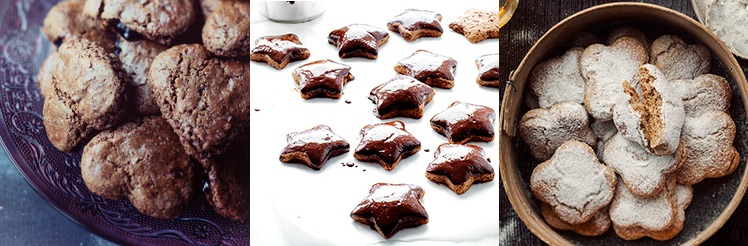

Pierniczki
by Natalia 24 marzec 2015, 16:00

Składniki: ok. 25 sztuk
Przygotowanie:
Mąkę przesiać na stolnicę razem z kakao. Dodać przyprawę piernikową, cukier, cynamon, imbir i sodę. Wymieszać dokładnie łyżką. W garnuszku roztopić masło lub olej kokosowy. Do mąki dodać rozpuszczony tłuszcz, niecałe jajko i gorący miód. Zagnieść ciasto na gładką masę (ok. 10 minut). Wyłożyć na stolnicę, rozwałkować na placek o grubości ok. 8mm. Wycinamy odpowiedznie kształty. Smarujemy pierniczki roztrzepanym jajkiem. Ułożyć na blaszcze w odstępach ok. 2-3 cm. Piekarnik nagrzać do 180 stopni C. Pierniczki piec ok. 7-10 minut. Wystudzić, czekoladę rozstopić w kąpieli wodnej z mlekiem. Polać pierniczki lub posypać cukrem pudrem.